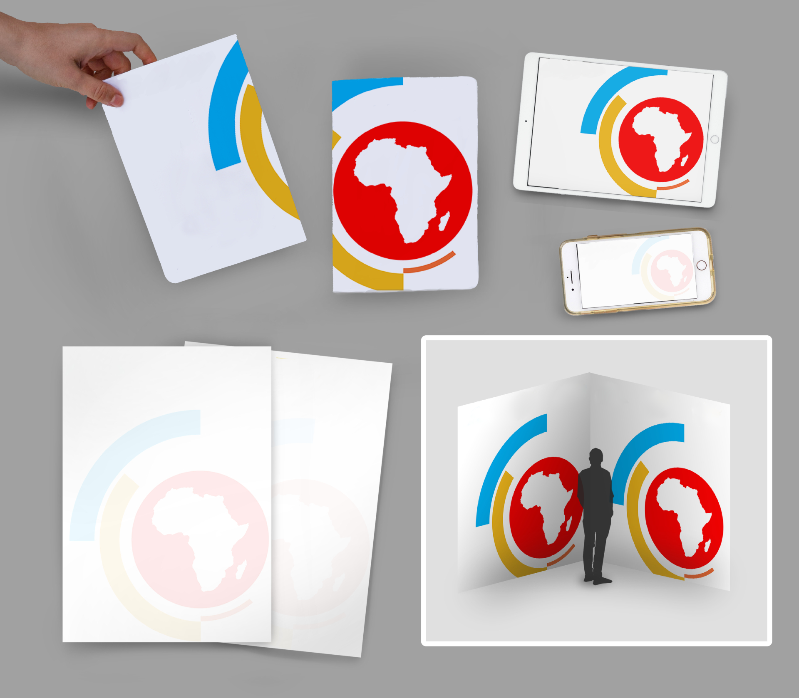
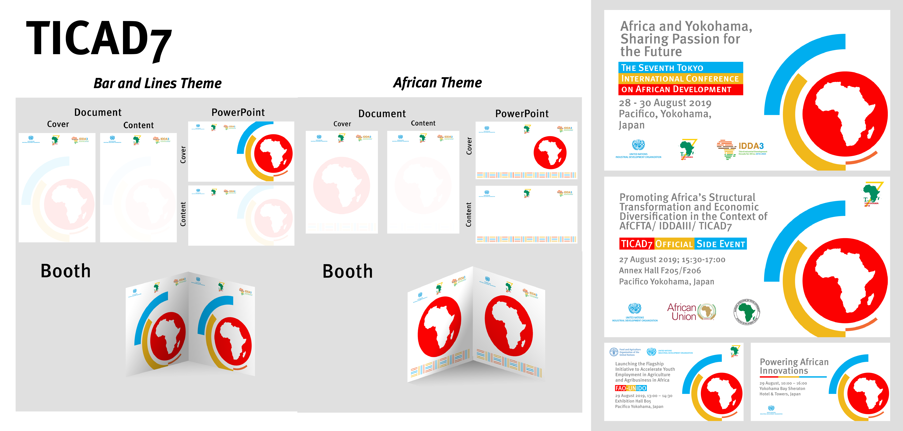
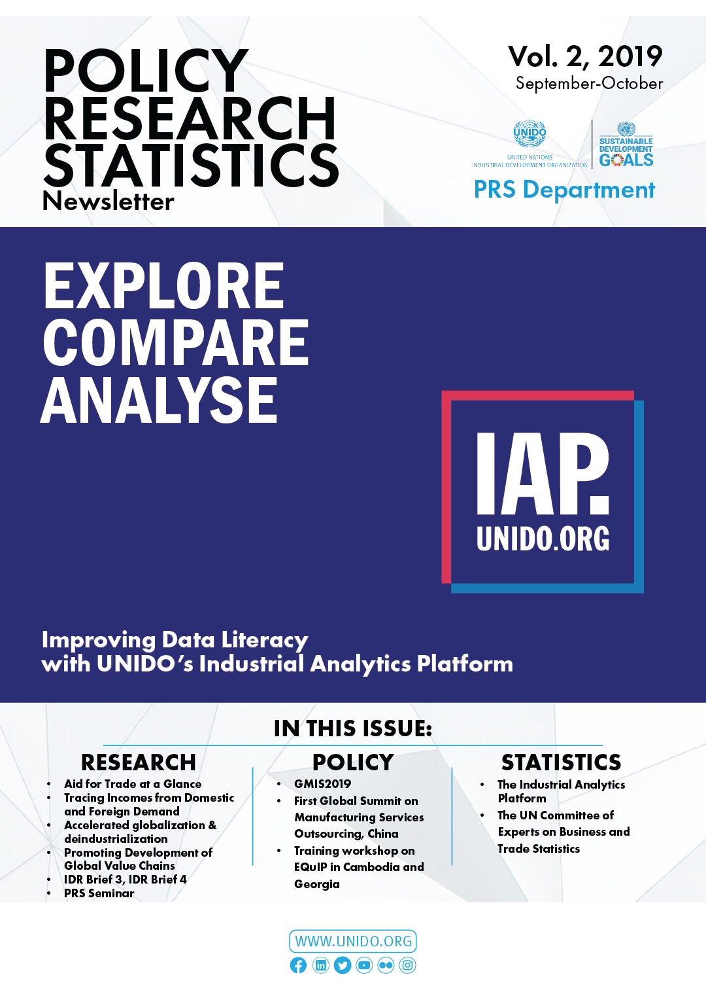
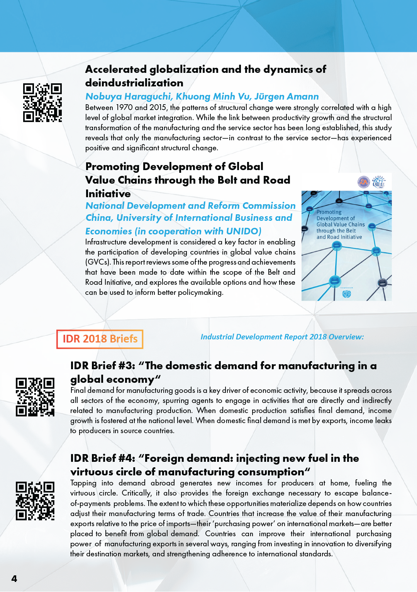
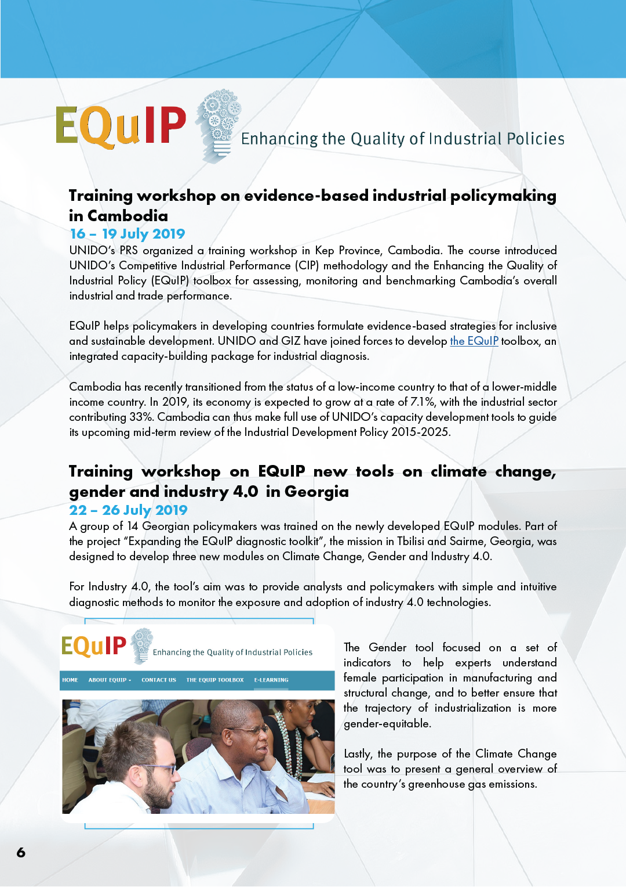
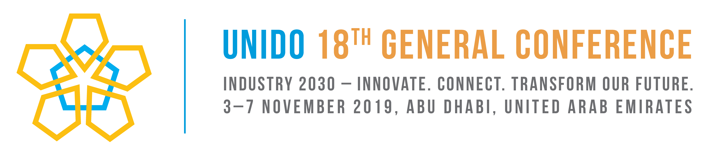
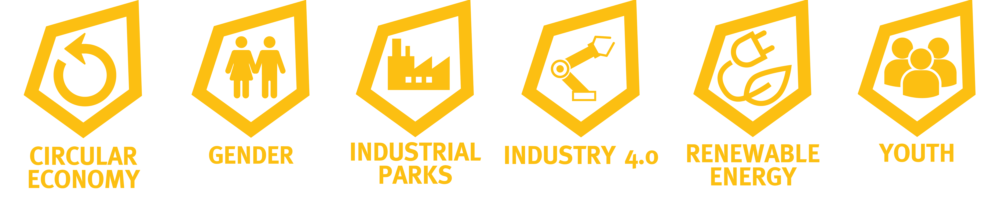

Arbeit beim UNIDO
Project Overview
5 Monate / Print und Branding / Solo und Gruppen Projekte
Verschiedene Projekten als Praktikant in der Medienabteilung bei der Organisation der Vereinten Nationen für industrielle Entwicklung (United Nations Industrial Development Organization).

TICAD7
- Branding für das größte Events den afrikanischen-japanische Inititiaven UNIDOs.
- Benutzt die Farben des Pre-Events als Verbindnug zum Main Event.



Politics, Research, Statistics Newsletter
Ein Newsletter für den Politics, Research, and Statistics Abteilung des UNIDOs.
- Die ersten zwei Ausgaben mit der anderen Praktikantinnen entworfen.
- Newsletter für politischer Entscheidungsträger um spezifische Strategien zu bauen.



UNIDO 18th General Conference
- Logo und kleine Elemente für das größte Event der UNIDO.
- Integriert der Nationalblume Emirates und arabischen Geometrie.
- Als Leiterin für die Verlagselemente zusammen mit anderen Praktikantinnen.

